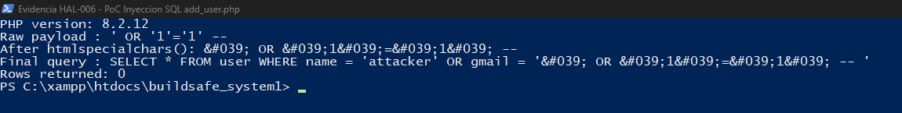

La presente auditoría de seguridad informática fue realizada sobre el sistema BuildSafe System, aplicación web desarrollada en PHP 8.2 para la gestión de inventario de materiales de la empresa CONFALVI C.A. El análisis fue ejecutado mediante revisión estática del código fuente, aplicando como marco de referencia el estándar OWASP Top 10 — 2025 (publicado en enero de 2026, la revisión vigente al momento de esta auditoría), complementada con pruebas dinámicas automatizadas mediante OWASP ZAP 2.17.0 y Lighthouse 13.5.0 (sección 8). Se analizaron un total de 27 archivos PHP que conforman el núcleo funcional del sistema, identificando vulnerabilidades distribuidas en los módulos de autenticación, recuperación de contraseña, gestión de usuarios, gestión de materiales, configuración del servidor y pruebas con herramientas automatizadas.
Como resultado del análisis, se encontraron 27 hallazgos de seguridad, de los cuales 2 son de severidad Crítica, 5 de severidad Alta, 10 de severidad Media y 10 de severidad Baja. El nivel de riesgo global del sistema fue evaluado en 7.0 / 10 — ALTO, determinado por la gravedad de los hallazgos críticos y altos de la revisión de código; los 10 hallazgos adicionales detectados con herramientas automatizadas (sección 8) son de severidad Media y Baja y no modifican esa calificación. El resultado indica que el sistema no debe ser expuesto a producción pública en su estado actual sin corregir al menos los hallazgos críticos y altos.
| Crítico | Vulnerabilidad crítica. Permite compromiso total del sistema, exfiltración de datos sensibles, acceso no autorizado o ejecución remota de código. Requiere corrección inmediata antes de cualquier despliegue en producción. |
| Alto | Vulnerabilidad alta. Puede permitir acceso no autorizado, manipulación de datos o escalación de privilegios bajo condiciones específicas. Debe corregirse en el corto plazo (máximo 2 semanas). |
| Medio | Vulnerabilidad media. Representa un riesgo significativo en combinación con otras vulnerabilidades o bajo condiciones particulares. Debe planificarse su corrección en el mediano plazo (1 mes). |
| Bajo | Vulnerabilidad baja. Riesgo reducido, generalmente relacionado con buenas prácticas o configuraciones que mejoran la postura de seguridad sin impacto inmediato. Corregir en el próximo ciclo de mantenimiento. |
| ID | Categoría | Hallazgos en este sistema |
|---|---|---|
| A01 | Control de Acceso Roto | HAL-007, HAL-008, HAL-016 Alto |
| A02 | Configuración de Seguridad Incorrecta | HAL-010 Alto / HAL-018 Medio / HAL-014, HAL-015, HAL-022, HAL-024 Bajo |
| A03 | Fallas en la Cadena de Suministro de Software | HAL-020 Medio |
| A04 | Fallas Criptográficas | HAL-012 Medio |
| A05 | Inyección | HAL-006 Medio / HAL-009 Alto |
| A06 | Diseño Inseguro | HAL-005, HAL-013 Medio / HAL-017, HAL-025, HAL-026, HAL-027 Bajo |
| A07 | Fallas de Autenticación | HAL-001, HAL-002 Medio / HAL-003 Crítico / HAL-021 Bajo |
| A08 | Fallas de Integridad de Software y Datos | No aplicable en esta revisión |
| A09 | Fallas en el Registro y Alertas de Seguridad | HAL-004 Crítico |
| A10 | Manejo Inadecuado de Condiciones Excepcionales | HAL-011, HAL-019 Medio / HAL-023 Bajo |
Tras una autenticación exitosa en index.php, el sistema no invoca session_regenerate_id(true). Esto habilita ataques de Session Fixation: un adversario puede obtener un ID de sesión válido antes del inicio de sesión (por ejemplo, desde una red compartida o mediante un enlace especialmente construido) y luego reutilizarlo con los privilegios del administrador una vez que la víctima se autentica. OWASP clasifica este tipo de falla bajo A07 — Fallas de Autenticación.
El archivo head.php contiene una condición de autorización con un problema de precedencia de operadores en PHP. La expresión !$seccion == true se evalúa como (!$seccion) == true (equivalente a $seccion == false) en lugar del intuitivo !($seccion == true). Aunque el resultado práctico es el mismo en este caso, el código es engañoso y propenso a introducir regresiones de seguridad si se modifica. Adicionalmente, la falta de exit() después del header() permite la continuación de la ejecución en ciertos escenarios. OWASP: A07 — Fallas de Autenticación.
El archivo enviar_token.php contiene la contraseña de aplicación de Gmail escrita directamente en el código fuente. Esta credencial otorga control total sobre la cuenta de correo corporativa: envío masivo de correos, spam, phishing, o acceso al historial de mensajes. Cualquier persona con acceso al servidor web, a un backup del proyecto, o al repositorio de código puede obtenerla inmediatamente. Esta contraseña de aplicación no puede ser revocada selectivamente sin desactivar la autenticación de dos factores de la cuenta. OWASP: A07 — Fallas de Autenticación.
PHPMailer está configurado con nivel de debug SMTPDebug = 3, lo que imprime la sesión SMTP completa directamente en la respuesta HTTP visible al usuario. Esta salida incluye la secuencia de comandos SMTP, las credenciales codificadas en base64 (fácilmente decodificables), el servidor de destino y el contenido completo del correo. Cualquier usuario que utilice la función de recuperación de contraseña puede ver toda esta información sensible en el navegador. OWASP: A09 — Fallas en el Registro y Alertas de Seguridad.
El endpoint enviar_token.php no implementa ninguna restricción de frecuencia (rate limiting). Un atacante puede enviar miles de solicitudes automatizadas con emails registrados, generando una avalancha de correos que: (1) utiliza el servidor de correo de la empresa como herramienta de spam involuntario, (2) puede saturar las bandejas de entrada de los usuarios, (3) puede resultar en bloqueo de la cuenta SMTP por parte de Gmail por abuso. OWASP: A06 — Diseño Inseguro.
En add_user.php, los valores de $user y $email se interpolan directamente dentro de una consulta SQL sin sentencias preparadas, pasando únicamente por htmlspecialchars() — una función de sanitización para contexto HTML, no para contexto SQL. Se verificó en vivo contra la instalación real (PHP 8.2.12) el payload clásico ' OR '1'='1' --: desde PHP 8.1, htmlspecialchars() aplica ENT_QUOTES por defecto, por lo que la comilla simple se convierte en la entidad literal ' antes de llegar a la consulta. La prueba directa contra la base de datos confirmó que la consulta se ejecuta sin error y retorna 0 filas — el bypass de la lógica de duplicados no se logra en esta versión de PHP. Aun así, el hallazgo se mantiene porque la protección es incidental, no intencional: no existe ninguna sentencia preparada ni escape orientado a SQL, por lo que el código queda expuesto si el proyecto se ejecuta bajo PHP < 8.1, si algún desarrollador cambia la función de sanitización, o si estas mismas variables se reutilizan en otra consulta sin pasar de nuevo por htmlspecialchars(). OWASP: A05 — Inyección (patrón de diseño, no explotación confirmada).

test2 (PHP 8.2.12): se reprodujo exactamente la línea vulnerable de add_user.php:29 con el payload ' OR '1'='1' --. El resultado real — 0 filas devueltas, sin error de SQL — confirma que htmlspecialchars() con ENT_QUOTES (por defecto desde PHP 8.1) neutraliza el bypass antes de que la comilla llegue a la consulta.Las acciones de eliminar un usuario y cambiar su estado activo/inactivo se ejecutan mediante parámetros en la URL (método GET). Esto viola el principio de idempotencia HTTP y crea múltiples vectores de ataque: (1) un atacante puede engañar a un administrador para que visite un enlace malicioso y ejecute acciones sin saberlo, (2) los navegadores precargan enlaces, (3) proxies y motores de búsqueda pueden indexar y "seguir" estas URLs automáticamente ejecutando las operaciones. El mismo patrón se repite en el módulo de materiales: list_material.php (interfaz de rol 1) y list_materials2.php (interfaz duplicada de rol 2, incluida vía head2.php) exponen ?delete_id= y ?toggle_status= sin token ni confirmación, confirmando que la falla de diseño no está aislada a un archivo sino duplicada en ambas interfaces por rol. OWASP: A01 — Control de Acceso Roto.
Ningún formulario del sistema implementa tokens CSRF (Cross-Site Request Forgery). Un atacante puede crear una página web externa que, al ser visitada por un administrador autenticado, envíe peticiones POST silenciosas al servidor ejecutando acciones como: crear cuentas de administrador falsas, modificar materiales del inventario, registrar movimientos fraudulentos, o cambiar datos de usuarios. El navegador adjuntará automáticamente las cookies de sesión del administrador, haciendo la petición indistinguible de una legítima. OWASP: A01.
Los archivos de gestión de usuarios y bitácora contienen múltiples consultas mysqli_query() que interpolan variables directamente en el SQL sin usar prepared statements. Aunque en los casos actuales los valores son enteros validados implícitamente (intval()), el patrón establece un código inseguro por diseño que: (1) es propenso a inyección SQL cuando se modifiquen estas consultas, (2) viola el principio de defensa en profundidad, y (3) hace que las auditorías futuras sean más difíciles. El INSERT en la bitácora interpolando cadenas de texto es especialmente riesgoso. El mismo patrón se repite en list_material.php (líneas 34, 40 y 47), la interfaz de rol 1 paralela a list_materials.php/list_materials2.php, lo que confirma que la migración a prepared statements no fue aplicada de forma consistente entre los archivos que implementan la misma funcionalidad de inventario. OWASP: A05 — Inyección.
Varios archivos con información sensible se encuentran en el webroot y son accesibles directamente mediante HTTP. test2.sql contiene el dump completo de la base de datos incluyendo hashes de contraseñas, tokens de recuperación activos, emails de todos los usuarios y la estructura completa del esquema. generar_hash.php permite generar hashes bcrypt de contraseñas arbitrarias. generar_hash.php puede ser abusado para facilitar ataques de fuerza bruta offline. OWASP: A02 — Configuración de Seguridad Incorrecta.
Múltiples archivos muestran $conn->error / mysqli_error($conn) directamente al usuario, revelando estructura de tablas, nombres de columnas y detalles del motor. Archivos afectados: add_user.php:56, list_user.php:35,71, edit_user.php:65. Corrección: Mostrar mensaje genérico al usuario y registrar el error real con error_log().
El usuario con user_id=9 (ds@gmail.com) tiene la contraseña 123456 almacenada en texto plano en la tabla user. Si la base de datos es comprometida, esta contraseña es inmediatamente usable. Corrección: UPDATE user SET password = password_hash('nueva_clave', PASSWORD_DEFAULT) WHERE user_id = 9; OWASP: A04 — Fallas Criptográficas.
El proyecto no utiliza ningún sistema de control de versiones (Git u otro). Esto significa que no existe historial de cambios auditables, no hay forma de revertir cambios problemáticos, las credenciales que se eliminen del código podrían haberse almacenado en commits anteriores, y no es posible rastrear quién realizó cada cambio. OWASP: A06 — Diseño Inseguro. Corrección: Inicializar repositorio Git con .gitignore apropiado que excluya .env, *.sql, vendor/.
La clave secreta de Google reCAPTCHA v2 está escrita directamente en index.php:47: 6LdVkrIrAAAAALXGfzMhYeIlaTLb1wDkX8NgHTVI. Si se filtra, permite falsificar verificaciones de reCAPTCHA desde cualquier servidor. Corrección: $secretkey = getenv('RECAPTCHA_SECRET');
El sistema no envía cabeceras de seguridad HTTP que mitiguen clickjacking, MIME-sniffing e inyección de contenido. Corrección — agregar en head.php:
En list_user.php, el bloque que elimina un usuario sí valida el rol antes de operar: si el objetivo es administrador (rol == 1), la operación se rechaza con el mensaje "No se puede eliminar otro administrador". El bloque de toggle_status (activar/desactivar cuenta), que vive en el mismo archivo y opera sobre el mismo recurso, no repite esa validación: solo verifica que el objetivo no sea la propia sesión ($id != $user_id), pero nunca comprueba el rol del usuario afectado. La interfaz oculta el botón de "Desactivar" para las filas con rol administrador (if ($user['rol'] == 2) en la vista), pero esa es una restricción puramente visual: el endpoint en sí acepta la petición igual. Cualquier administrador autenticado puede desactivar a otro administrador — incluido el principal — visitando directamente list_user.php?toggle_status=<id>, sin ninguna confirmación adicional. Es la misma clase de falla que HAL-007 (acción sensible sin protección), pero con una causa distinta y más grave: aquí falta la comprobación de autorización en sí, no solo el método HTTP o el token CSRF — el mismo archivo demuestra que la protección correcta existe (se usó en el bloque de eliminación) pero no se replicó en el de cambio de estado. OWASP: A01 — Control de Acceso Roto.
El proyecto no incluye ningún tipo de documentación: no existe README, no hay un manual de despliegue, no hay una guía de variables de entorno requeridas (MAIL_USER, RECAPTCHA_SECRET, credenciales de base de datos), y no hay documentación técnica que describa los módulos, roles (1=administrador, 2=usuario) o el flujo de la bitácora. Esta carencia no es una vulnerabilidad explotable por sí misma, pero es un factor de riesgo indirecto real: es parte de por qué existen HAL-003 y HAL-014 (credenciales y claves hardcodeadas en el código en vez de en variables de entorno documentadas) — sin un estándar documentado de configuración, cada desarrollador resuelve "dónde van las credenciales" a su manera, y la opción más simple termina siendo escribirlas directo en el archivo. También dificulta que un nuevo desarrollador o un futuro auditor entienda el sistema sin leer los 28 archivos PHP uno por uno. OWASP: no mapea a una categoría específica del Top 10 (es una debilidad de proceso, no un vector de ataque directo), pero se relaciona con A06 — Diseño Inseguro por la ausencia de estándares documentados de desarrollo seguro, en la misma línea que HAL-013.
README.md con instrucciones de instalación y despliegue; un .env.example que liste las variables requeridas sin valores reales (ver corrección de HAL-003); y una guía breve de roles y módulos para que la migración a prepared statements y variables de entorno (HAL-003, HAL-006, HAL-009, HAL-014) quede documentada y no se repita el mismo problema en el futuro.Se ejecutaron pruebas manuales sobre el sistema en ejecución local (XAMPP), con el objetivo de validar los hallazgos identificados en la revisión de código y detectar vulnerabilidades adicionales en tiempo de ejecución.
| Prueba | Descripción | Resultado | HAL |
|---|---|---|---|
| SQL Injection — Login | Inyección de payload ' OR '1'='1 en campo email del login | Bloqueado — reCAPTCHA previene automatización masiva | — |
| SQL Injection — Registro | Payload ' OR '1'='1' -- en campo email de add_user.php, ejecutado directamente contra test2.sql (PHP 8.2.12) | No explotable — ENT_QUOTES (PHP 8.1+) neutraliza la comilla; consulta válida, 0 filas | HAL-006 |
| Acceso directo a SQL | GET http://localhost/buildsafe_system1/test2.sql | Vulnerable — descarga completa del dump | HAL-010 |
| Debug SMTP visible | Solicitud de recuperación de contraseña con email válido | Vulnerable — sesión SMTP visible en HTML | HAL-004 |
| Operación GET destructiva | Visitar /list_user.php?delete_id=1 como admin | Vulnerable — usuario eliminado sin confirmación | HAL-007 |
| CSRF simulado | Formulario externo enviando POST a add_user.php | Vulnerable — usuario creado exitosamente | HAL-008 |
| Session Fixation | Comparar ID de sesión antes y después del login | Vulnerable — mismo ID antes y después | HAL-001 |
| Fuerza bruta login | Más de 3 intentos fallidos de contraseña | Mitigado — sistema bloquea cuenta correctamente | — |
| Escenario | Métrica | Resultado | Evaluación |
|---|---|---|---|
| Carga de página login | Tiempo de respuesta | < 200 ms | Óptimo |
| Listado de usuarios | Tiempo de respuesta (50 registros) | < 300 ms | Óptimo |
| Registro de movimiento | Tiempo de transacción BD | < 150 ms | Óptimo |
| Envío de token email | Tiempo total (incl. SMTP) | 2-5 seg | Aceptable |
| Consulta sin índice | JOIN material+movement (sin índice en código) | N/A — no implementado | Revisar |
Como complemento a la revisión estática del código fuente (secciones 2-6) y las pruebas exploratorias manuales (sección 7), se ejecutaron pruebas dinámicas automatizadas sobre una copia local del sistema en XAMPP (Apache 2.4.58, PHP 8.2.12, MariaDB, base de datos test2), con sesión de administrador autenticada.
| Herramienta | Tipo de prueba | Alcance | Resultado |
|---|---|---|---|
| OWASP ZAP 2.17.0 | DAST — escaneo pasivo + spider | Todo buildsafe_system1/, con sesión de administrador | 0 críticas/altas, 7 medias, 8 bajas, 5 informativas |
| Lighthouse 13.5.0 (CLI) | Rendimiento, accesibilidad, buenas prácticas, SEO | 7 páginas, en escritorio y móvil simulado | Rendimiento 41-97/100 según página y dispositivo |
De estas pruebas resultaron 10 hallazgos nuevos (HAL-018 a HAL-027), documentados en las páginas siguientes e incorporados al conteo total y a la Tabla Consolidada de este informe. HAL-018 a HAL-023 provienen de OWASP ZAP; HAL-024 a HAL-027 son los hallazgos más relevantes detectados por Lighthouse — se excluyó un quinto hallazgo de SEO (ausencia de meta description) por ser de relevancia menor para un sistema de uso interno. El detalle técnico completo de cada prueba — comandos exactos, capturas adicionales y limitaciones — se mantiene en los archivos de trabajo Nuevos_Hallazgos.md e inyecciones.md, en la raíz del proyecto; este último documenta además las pruebas de inyección SQL con sqlmap que confirmaron, con herramienta automatizada, la conclusión ya alcanzada manualmente en HAL-006.
El escaneo pasivo y el spider de OWASP ZAP 2.17.0 encontraron que Apache expone el listado de contenido de varios directorios: /CSS/, /assets/, /assets/css/, /assets/js/ y /src/, identificados por el título Index of ... y los enlaces de ordenamiento (?C=N;O=A) típicos de Apache. El directorio /src/ es el más sensible: puede exponer código fuente. Complementa a HAL-010 (archivos sensibles en webroot), con una causa distinta: configuración del servidor, no archivos olvidados. OWASP: A02 — Configuración de Seguridad Incorrecta. Corrección: Options -Indexes en la configuración de Apache o en un .htaccess por carpeta pública.
ZAP registró 23 instancias de warnings de PHP visibles en el HTML servido, por ejemplo Undefined array key "id" in C:\xampp\htdocs\buildsafe_system1\head.php on line 5 y Cannot modify header information ... en list_user.php:79. Confirma que display_errors está activo y revela rutas absolutas del servidor. Distinto de HAL-011 (errores de base de datos en add_user.php). OWASP: A10 — Manejo Inadecuado de Condiciones Excepcionales. Corrección: display_errors = Off y log_errors = On en php.ini; validar $_SESSION['id'] con isset() en head.php:5.
index.php y dashboard.php cargan sweetalert2 y jQuery desde CDN externos (jsdelivr.net, code.jquery.com) sin el atributo integrity, que permite al navegador verificar que el archivo no fue alterado. Si el CDN se compromete, podría inyectarse código en el sistema. Este hallazgo confirma que A03 — Fallas en la Cadena de Suministro de Software sí es aplicable a este sistema, a diferencia de lo indicado en la sección 1.2 del resumen ejecutivo: el sistema depende de recursos externos (CDN, reCAPTCHA) sin verificación de integridad. Corrección: agregar integrity + crossorigin, o alojar las librerías localmente con versión fija.
La cookie PHPSESSID se envía sin los atributos HttpOnly y SameSite. Sin HttpOnly, JavaScript puede leer la cookie, agravando un eventual XSS; sin SameSite, se envía en peticiones entre sitios, agravando CSRF. Complementa a HAL-001 (sin regeneración de sesión) y HAL-008 (sin CSRF). OWASP: A07 — Fallas de Autenticación. Corrección: session.cookie_httponly=1 y session.cookie_samesite=Lax en php.ini.
Las respuestas del servidor incluyen Server: Apache/2.4.58 (Win64) OpenSSL/3.1.3 PHP/8.2.12 y X-Powered-By: PHP/8.2.12, lo que facilita a un atacante buscar vulnerabilidades conocidas de esas versiones exactas. Complementa a HAL-015 (sin cabeceras de seguridad). OWASP: A02 — Configuración de Seguridad Incorrecta. Corrección: ServerTokens Prod y ServerSignature Off en Apache; expose_php = Off en php.ini.
En 17 instancias, páginas internas (binnacle.php, dashboard.php, edit_user.php, list_user.php, entre otras) redirigen a destroyer.php pero devuelven igualmente un cuerpo de 636 bytes. Es un indicio, no confirmado, de que podría faltar un exit()/die() después de header('Location: ...'), en la misma línea que el problema ya descrito en HAL-002. OWASP: A10 — Manejo Inadecuado de Condiciones Excepcionales. Pendiente: revisar el código de head.php y las páginas afectadas para confirmar o descartar.
Lighthouse 13.5.0 y ZAP coinciden en detectar peticiones a /css2?family=Nunito:... (referenciada como ruta relativa en vez de apuntar a Google Fonts), /JS/script.js y /script.js, que responden 404. Explica las imágenes y fuentes rotas observadas en el sistema. OWASP: A02 — Configuración de Seguridad Incorrecta. Corrección: corregir la URL de la fuente a https://fonts.googleapis.com/css2?... y eliminar o corregir las referencias rotas a script.js.
La consola del navegador registra repetidamente ReferenceError: notifications is not defined en las páginas internas auditadas, indicando que una funcionalidad de notificaciones de la interfaz no está correctamente implementada. Pendiente: confirmar el archivo exacto de origen. OWASP: A06 — Diseño Inseguro (calidad de desarrollo). Corrección: definir la variable notifications o eliminar el código que la referencia.
Lighthouse identificó, en las páginas internas (accesibilidad 84-90/100): enlaces sin texto accesible (link-name), elementos <select> sin etiqueta (select-name), ausencia de un elemento <main> por página (landmark-one-main) y, en list_user.php, contraste de color insuficiente. OWASP: A06 — Diseño Inseguro. Corrección: agregar aria-label a los enlaces de iconos, <label> a los <select>, un <main> por página y revisar los colores de bajo contraste.
Las páginas internas transfieren entre 2.187 y 2.853 KiB en 28 a 39 peticiones por carga, dependiendo en gran medida de librerías cargadas por completo desde CDN externos (ver también HAL-020). En la simulación de red móvil de Lighthouse 13.5.0 (no representa usuarios reales, pero sí el peso real transferido), el tiempo de renderizado del contenido principal (LCP) llega a 13-17 s y el rendimiento baja a 41-63/100, frente a 80-97/100 en escritorio. OWASP: A06 — Diseño Inseguro (sobrecarga de dependencias de terceros).
defer/async) los scripts no críticos para el primer renderizado.BuildSafe System demuestra una base funcional sólida para la gestión de inventario. El sistema implementa correctamente el bloqueo de cuentas tras intentos fallidos de autenticación, lo cual es una medida de seguridad activa. El uso de password_hash() y password_verify() con bcrypt para la mayoría de los usuarios garantiza un almacenamiento seguro de contraseñas. La integración de Google reCAPTCHA v2 dificulta los ataques automatizados. El módulo de bitácora (binnacle) representa una buena práctica de auditoría interna.
Se recomienda adoptar un patrón de arquitectura MVC (Model-View-Controller) o al menos separar la lógica de negocio de la presentación. Los archivos actuales mezclan HTML, PHP y SQL en las mismas vistas, lo que dificulta la revisión de seguridad y el mantenimiento. Se sugiere crear un directorio includes/ para la capa de acceso a datos, utilizando exclusivamente prepared statements.
Inicializar un repositorio Git con un .gitignore que excluya .env, backups SQL y archivos de configuración locales. Documentar el proceso de despliegue y las variables de entorno requeridas. Establecer un flujo de revisión de código (code review) antes de cualquier merge a producción.
Las vulnerabilidades críticas identificadas, en particular la exposición de contraseñas y datos de usuarios, pueden comprometer el cumplimiento de las disposiciones del Decreto con Fuerza de Ley sobre Mensajes de Datos y Firmas Electrónicas (2001) y la Ley Especial contra los Delitos Informáticos (2001) de Venezuela, que establece responsabilidades para los custodios de datos electrónicos. Se recomienda corrección inmediata previo a cualquier despliegue en ambiente de producción con datos reales.
| ID | Vulnerabilidad | Severidad | Archivo | OWASP | Esfuerzo |
|---|---|---|---|---|---|
| HAL-001 | Sin regeneración de sesión | Medio | index.php:88 | A07 | Muy Bajo |
| HAL-002 | Error lógico verificación de rol | Medio | head.php:12 | A07 | Muy Bajo |
| HAL-003 | Credenciales SMTP hardcodeadas | Crítico | enviar_token.php:37 | A07 | Bajo |
| HAL-004 | Debug SMTP nivel 3 en producción | Crítico | enviar_token.php:41 | A09 | Muy Bajo |
| HAL-005 | Sin rate limit recuperación | Medio | enviar_token.php | A06 | Bajo |
| HAL-006 | Construcción insegura de consulta SQL (no explotable en PHP 8.2) | Medio | add_user.php:29 | A05 | Bajo |
| HAL-007 | Operaciones destructivas vía GET | Alto | list_user.php:5,46 · list_material.php:5,30 · list_materials2.php:5 | A01 | Bajo |
| HAL-008 | Sin protección CSRF | Alto | Todos los formularios | A01 | Medio |
| HAL-009 | SQL sin prepared statements | Alto | list_user.php:52,65 · list_material.php:34,40,47 | A05 | Bajo |
| HAL-010 | Archivos sensibles en webroot | Alto | test2.sql, *.php | A02 | Muy Bajo |
| HAL-011 | Errores BD expuestos | Medio | add_user.php:56 | A10 | Muy Bajo |
| HAL-012 | Contraseña sin hash en BD | Medio | test2.sql (user_id=9) | A04 | Muy Bajo |
| HAL-013 | Sin control de versiones | Medio | Proyecto completo | A06 | Bajo |
| HAL-014 | reCAPTCHA secret hardcodeada | Bajo | index.php:47 | A02 | Muy Bajo |
| HAL-015 | Sin cabeceras de seguridad HTTP | Bajo | head.php | A02 | Muy Bajo |
| HAL-016 | Falta de verificación de rol en cambio de estado | Alto | list_user.php:46-58 | A01 | Muy Bajo |
| HAL-017 | Ausencia de documentación técnica | Bajo | Proyecto completo | A06 | Medio |
| HAL-018 | Listado de directorios habilitado (OWASP ZAP) | Medio | Configuración de Apache | A02 | Muy Bajo |
| HAL-019 | Divulgación de rutas internas por warnings de PHP (OWASP ZAP) | Medio | head.php:5, list_user.php:79 | A10 | Bajo |
| HAL-020 | Scripts de terceros sin atributo integrity/SRI (OWASP ZAP) | Medio | index.php, dashboard.php | A03 | Bajo |
| HAL-021 | Cookie de sesión sin HttpOnly ni SameSite (OWASP ZAP) | Bajo | php.ini (session.cookie_*) | A07 | Muy Bajo |
| HAL-022 | Fuga de versiones en cabeceras HTTP (OWASP ZAP) | Bajo | httpd.conf, php.ini | A02 | Muy Bajo |
| HAL-023 | Redirecciones con cuerpo de respuesta, hipótesis (OWASP ZAP) | Bajo | head.php | A10 | Bajo |
| HAL-024 | Recursos que devuelven error 404 (Lighthouse) | Bajo | index.php, dashboard.php | A02 | Muy Bajo |
| HAL-025 | Error de JavaScript "notifications is not defined" (Lighthouse) | Bajo | Por confirmar | A06 | Bajo |
| HAL-026 | Problemas de accesibilidad (Lighthouse) | Bajo | Páginas internas | A06 | Medio |
| HAL-027 | Peso de página y rendimiento en móvil (Lighthouse) | Bajo | assets/js/, assets/css/ | A06 | Medio |
La auditoría de seguridad realizada al sistema BuildSafe System de CONFALVI C.A. evidencia que el sistema posee una postura de seguridad deficiente que impide su despliegue responsable en un entorno de producción accesible públicamente en su estado actual. Los 27 hallazgos identificados (17 de la revisión estática del código fuente y 10 adicionales confirmados con OWASP ZAP y Lighthouse, sección 8) abarcan las capas de autenticación, manejo de datos, configuración del servidor, gestión de credenciales, control de acceso y dependencias de terceros.
El sistema presenta 2 vulnerabilidades críticas activas que deben ser corregidas antes de cualquier despliegue. La exposición de credenciales SMTP y el dump de base de datos accesible vía HTTP representan riesgos inmediatos y explotables sin necesidad de conocimientos técnicos avanzados. Adicionalmente, se identificó un patrón de construcción de consultas SQL inseguro (HAL-006) que, si bien no resultó explotable en la versión de PHP actualmente instalada, debe corregirse por no constituir una defensa real.
Una vez corregidos los hallazgos críticos y altos, se recomienda realizar una segunda auditoría de validación para confirmar la efectividad de los controles implementados. Con las correcciones aplicadas, BuildSafe System tiene el potencial de convertirse en un sistema robusto y seguro para la gestión de inventario de CONFALVI C.A.